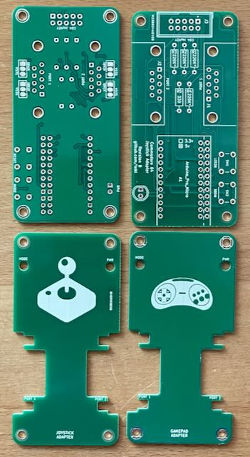
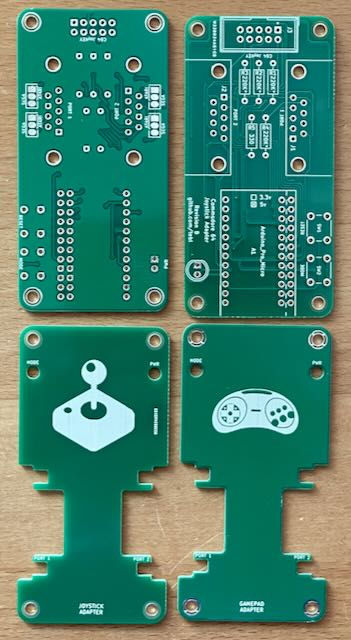
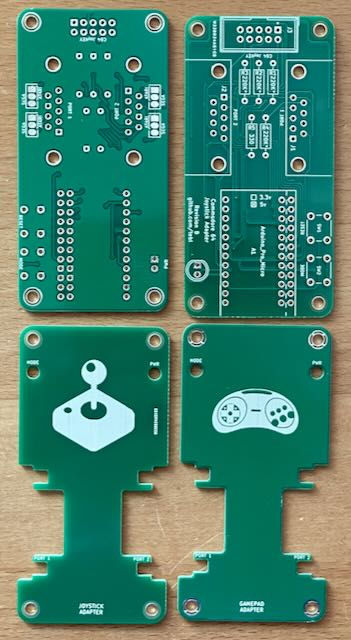

Ich habe die Platine aufgebaut und getestet.
Projekt-Homepage • Interakiver Bestückungsplan • Schaltplan

Mit diesem Adapter kann man 2 Atari/C64 Joysticks oder 2 Sega Megadrive Controller über USB an einem modernen Computer anschließen.
| Komponente | Anzahl | Preis | Anbieter |
| Platine | 2 | €2.00 | |
| 330Ω Widerstand | 1 | €0.04 | Reichelt |
| 220kΩ Widerstand | 4 | €0.16 | Reichelt |
| 5mm LED, rot | 1 | €0.05 | Reichelt |
| 6x6x5mm Taster | 1 | €0.35 | Reichelt |
| 6x6x9.5mm Taster | 1 | €0.30 | Reichelt |
| M3 Schraube | 8 | €0.08 | Reichelt |
| M3 8mm Abstandhalter Buchse/Buchse | 4 | €0.04 | Reichelt |
| 90° D-Sub-9 Stecker | 2 | €0.72 | Reichelt |
| Arduino Pro Micro | 1 | €7.39 | Reichelt |
| nur Platine | €2.00 | ||
| Bausatz | €11.13 |